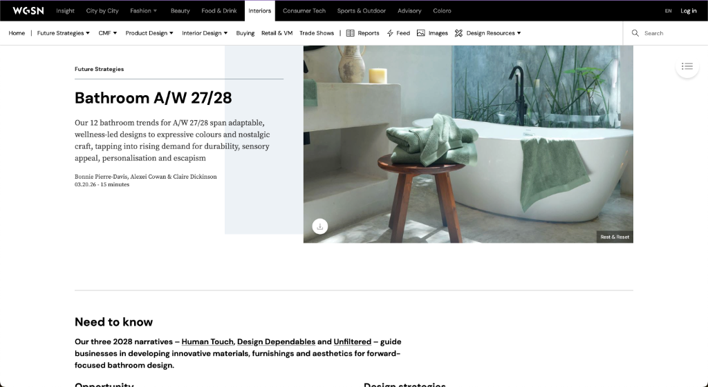

Welcome to Butterfly Effect
Sharing information effortlessly with a smart AI in just a single click.
Select Analysis Path
Choose how the AI should interpret this report's creative signal.
Analyze Full Page
Automated insight extraction from the entire active report.
Precision Highlight
Manually select sections to deeply analyze specific trend signals.

Bathroom A/W 27/28
Analyzing full report
Analyzing current report…
Reading trends and extracting keywords
Extracted Keywords
0
AI Read
Centred on human-scaled wellness and craft revival.
Key signals: sensory retreat, nostalgic textures, and long-life materials.
Bathroom A/W 27/28
Highlight mode active
Highlight text on the page to extract insights
Select any sentence or phrase from the report on the left.
AI Read
Selected text reflects sensory design principles — a rising signal
for material storytelling in premium bathroom contexts.